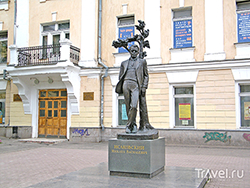

19 января исполнилось 115 лет со дня рождения Михаила Васильевича Исаковского
М.В. Исаковский, выдающийся русский советский поэт, родился в 1900 году в деревне Глотовка Смоленской области. Началом своей литературной деятельности поэт считал 1924 г., когда были напечатаны стихи «Подпаски», «Родное». В 1927 г. в Москве вышла книга «Провода в соломе», затем появились сборники «Провинция» (1930), «Мастера земли» (1931), «Четыре желания» (1936). В середине 30-х годов Исаковский приобретает широкую известность, его стихи и песни звучат по всей стране.
М.В. Исаковский – автор стихов о Великой Отечественной войне, многие из которых положены на музыку: «Катюша», «Ой, туманы мои...», «Враги сожгли родную хату», «Снова замерло всё до рассвета» и другие.
Кроме многочисленных поэтических сборников, М. В. Исаковский издал книгу

«О поэтическом мастерстве» (1951) и автобиографическую повесть «На Ельнинской земле» (1969).
М.В. Исаковский – Почетный гражданин Смоленска (1988). Его именем названы улицы в Смоленске и городах области. В поселке Всходы Смоленской области действует мемориальный музей М.В. Исаковского, размещенный в Доме культуры, построенном на средства М. В. Исаковского. Здесь же, на берегу реки Угры, находится памятник песне «Катюша», сооруженный земляками поэта.
На здании Дома работников просвещения установлена мемориальная доска.
К 100-летию со дня рождения Исаковского в Смоленске установлен памятник поэту (скульптор – народный художник РФ А. Г. Сергеев).
В 2003 году администрация Смоленской области учредила ежегодную литературную премию им. М.В. Исаковского.